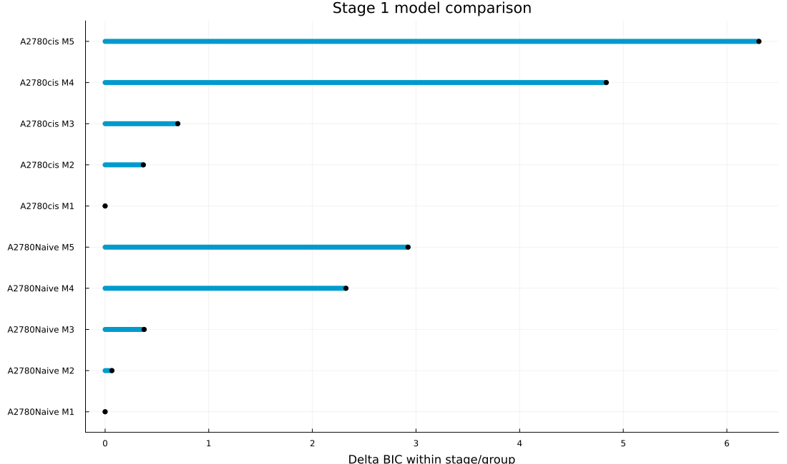
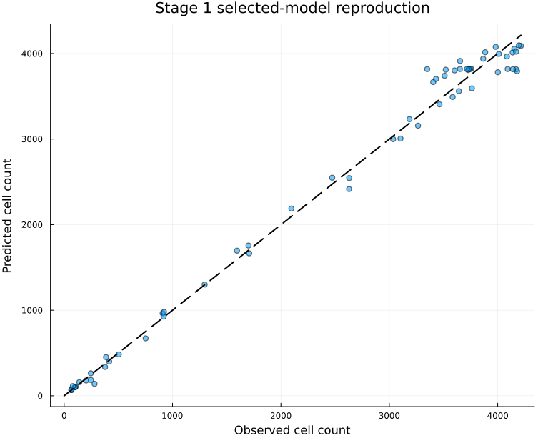
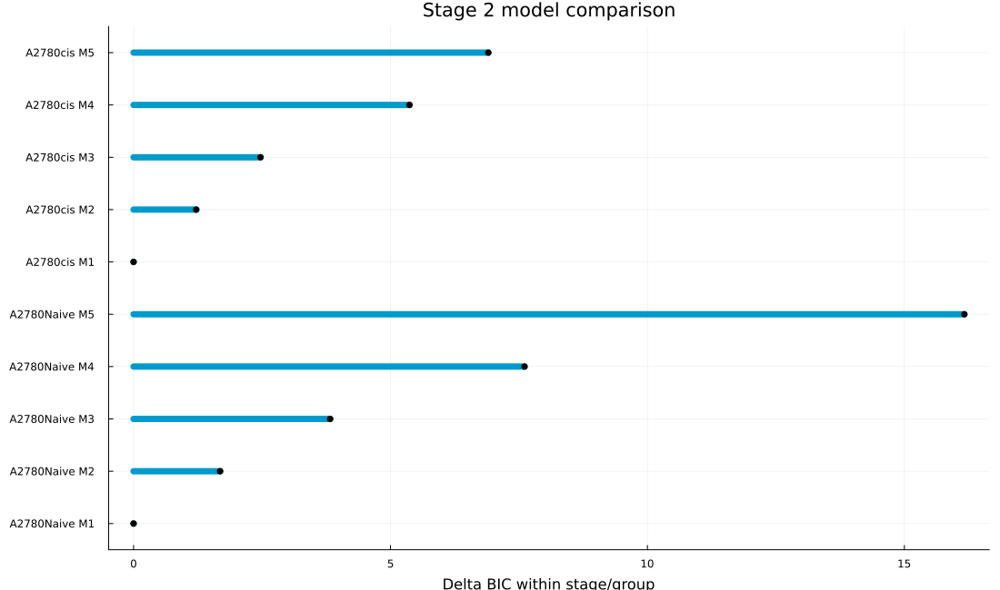
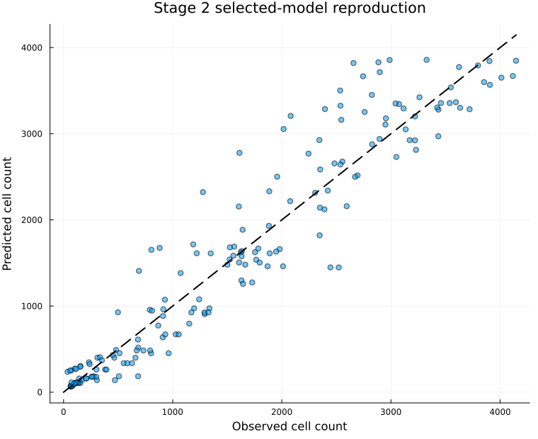
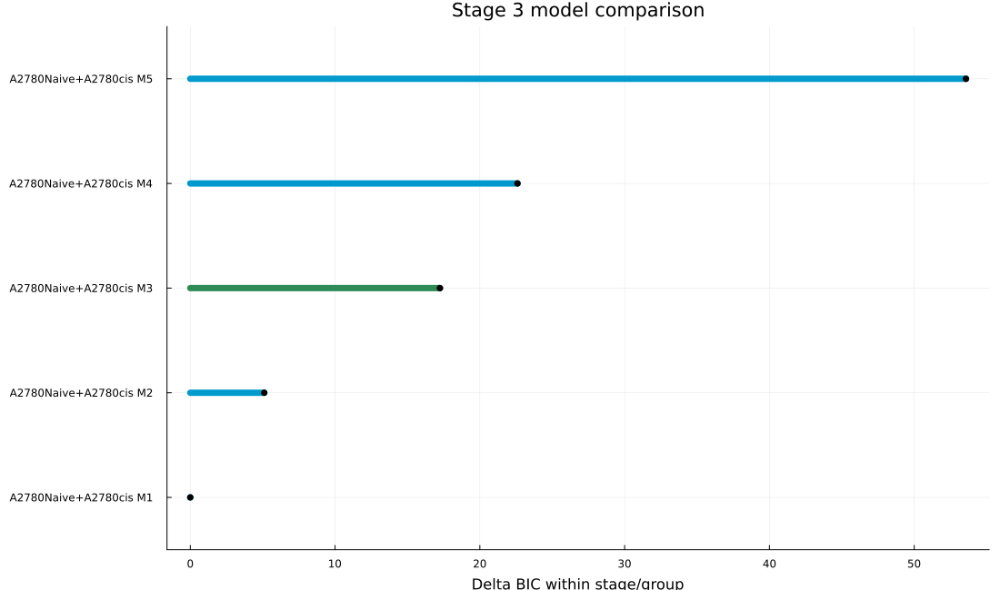
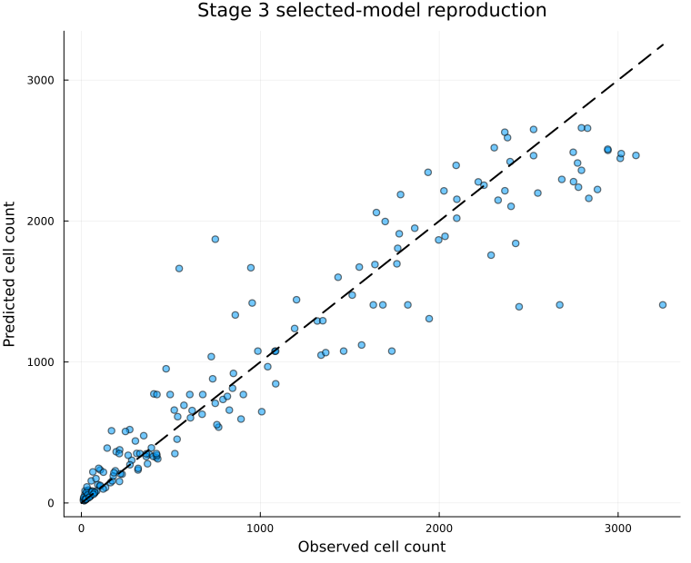
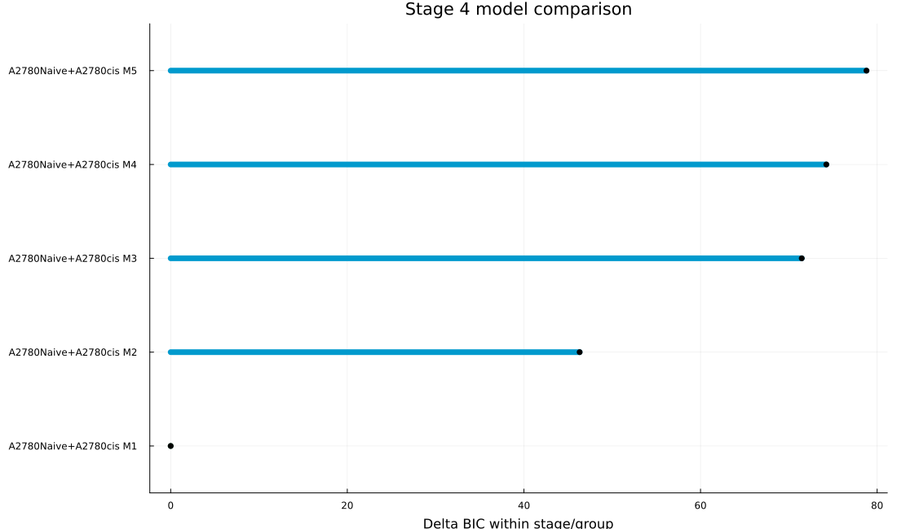
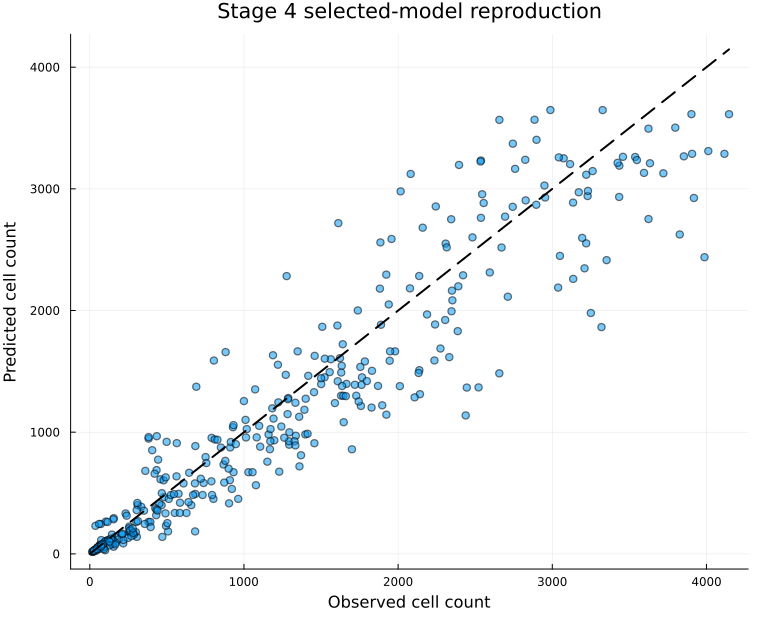

Conditional Model Tournament
Each retained Stage 1 lineage pair was carried into fresh Stage 2 and Stage 3 fits. The compatible winners were then inherited by a fresh linked Stage 4 fit. This is a conditional refit, not a visual substitution of previously exported curves.
Retained Complete Paths
| Rank | Stage 1 A2780Naive | Stage 1 A2780cis | Stage 2 A2780Naive | Stage 2 A2780cis | Stage 3 | Stage 4 | Cumulative path score | Boundary flags |
|---|---|---|---|---|---|---|---|---|
| 1 | theta_logistic_growth partial_5pct | adaptation_theta_logistic_growth shared | joint_ic_effect_hill_ramp_onset partial_5pct | joint_ic_effect_two_population shared | lv_asymmetric_competition_death | load_plus_tolerant_context | -2876.2 | 4 |
| 2 | theta_logistic_growth partial_5pct | theta_logistic_growth shared | joint_ic_effect_hill_ramp_onset partial_5pct | joint_ic_effect_two_population shared | lv_asymmetric_competition_death | load_plus_tolerant_context | -2800.6 | 4 |
| 3 | baranyi_theta_logistic_growth partial_5pct | baranyi_theta_logistic_growth shared | joint_ic_effect_hill_ramp_onset partial_5pct | joint_ic_effect_two_population shared | lv_asymmetric_competition_death | load_plus_tolerant_context | -2758.6 | 4 |
| 4 | baranyi_theta_logistic_growth partial_5pct | adaptation_theta_logistic_growth shared | joint_ic_effect_hill_ramp_onset partial_5pct | joint_ic_effect_two_population shared | lv_asymmetric_competition_death | load_plus_tolerant_context | -2753.7 | 4 |
How To Read The Score
Every stage retains its own BIC. The cumulative path score is the sum used to prune the beam and compare complete inheritance paths. It is not a new global BIC because fitted datasets and inherited information overlap across stages. Smaller values are favored only as a tournament heuristic.
Fitting Tournament
Stages 1-3, linked Stage 4 finalists, and the winning complete chain use 20 deterministic dispersed starts. The broad legacy treated-coculture diagnostic sweep uses three-start successive-halving screening before compatible finalists receive the full budget. Delayed and stiff candidates use bounded Nelder-Mead; smooth candidates can be refined with bounded BFGS. GrowthParameterEstimation records failed starts, boundary profiles, fitted parameters, and prediction artifacts in each path workspace.
Compatibility and screening limits
The current population-balance Stage 4 implementation requires delayed Hill-ramp A2780Naive treatment, a sensitive/tolerant A2780cis treatment model, and an LV competition equation. Other Stage 2 and Stage 3 candidates remain in the stage ranking tables but are not silently forced into an incompatible Stage 4 state system. The two seven-parameter interaction-scaled transit diagnostics remain available in the ordinary staged analysis, but are excluded from repeated beam-path refits after exceeding the per-candidate screening budget; the simpler additive transit model remains in the tournament.
Validation Of The Winning Path
Boundary counts are shown above. The winning complete path receives a within-trajectory residual bootstrap with complete model refitting. Density, dose, mixture, and context blocks are also withheld and refitted in turn. These are distinct from endpoint well-resampling.
Blocked validation
| Scheme | Held-out block | Status | Held-out nRMSE |
|---|---|---|---|
| density | density=20k | completed | 0.2 |
| density | density=30k | completed | 0.1 |
| dose | dose=0.67 | completed | 0.1 |
| dose | dose=1.0 | completed | 0.3 |
| dose | dose=1.47 | completed | 0.1 |
| mixture | monoculture=A2780Naive | completed | 0.2 |
| mixture | monoculture=A2780cis | completed | 0.1 |
| mixture | mixture=25-75 | completed | 0.2 |
| mixture | mixture=50-50 | completed | 0.1 |
| mixture | mixture=75-25 | completed | 0.2 |
| context | context=monoculture | completed | 0.1 |
| context | context=coculture | completed | 0.2 |
Whole-fit bootstrap
| Parameter | Median | 2.5% | 97.5% | Successful refits |
|---|---|---|---|---|
| naive_emax | 4.973 | 4.915 | 4.991 | 200 |
| naive_ec50_effect | 1.445 | 1.445 | 1.451 | 200 |
| naive_hill_n | 2.114 | 2.096 | 2.117 | 200 |
| naive_lambda | 0.657 | 0.656 | 0.658 | 200 |
| naive_t_onset | 2.552 | 2.513 | 2.574 | 200 |
| naive_log_contrast_density | -0.049 | -0.049 | -0.049 | 200 |
| cis_emax_sensitive | 4.814 | 4.811 | 4.814 | 200 |
| cis_emax_tolerant | 0.324 | 0.324 | 0.324 | 200 |
| cis_lambda | 4.985 | 4.985 | 4.988 | 200 |
| cis_t_onset | 6.975 | 6.975 | 6.98 | 200 |
| cis_f_tolerant0 | 0.574 | 0.574 | 0.575 | 200 |
| cis_log_contrast_density | 0.0 | 0.0 | 0.0 | 200 |
| beta_naive | -2.019 | -2.18 | -1.987 | 200 |
| beta_cis | 0.059 | 0.059 | 0.07 | 200 |
| log_cis_tolerant_context | -3.56 | -3.85 | -3.475 | 200 |
| cis_tolerant_logit_shift | 2.859 | 2.859 | 2.894 | 200 |
How To Read The Audit
BIC balances fit against the number of free parameters; lower is better. Delta BIC is measured from the lowest BIC in the same stage and lineage group. Median and worst nRMSE divide trajectory RMSE by that trajectory's largest observed count, making shape errors comparable across seeding densities. These nRMSE values describe reproduction of fitted data and are not held-out prediction errors. Boundary marks a parameter at or near an allowed limit. Eligible means the staged workflow permits inheritance; an ineligible low-BIC model is shown for comparison but is not carried forward.
Stage 1: Untreated Monoculture
This is a joint-fit reproduction audit across the available environments, not an independent holdout.
| stage | group | candidate | model | pooling | free_parameters | BIC | delta_BIC | boundary | eligible | selected | median_nRMSE | worst_nRMSE | points |
|---|---|---|---|---|---|---|---|---|---|---|---|---|---|
| 1 | A2780Naive | M1 | baranyi_theta_logistic_growth | partial_5pct | 6 | -177.5588 | 0.0 | true | true | true | 0.0281 | 0.0318 | 30 |
| 1 | A2780Naive | M2 | theta_logistic_growth | partial_5pct | 5 | -177.4933 | 0.0655 | true | true | false | 0.0298 | 0.0344 | 30 |
| 1 | A2780Naive | M3 | adaptation_theta_logistic_growth | partial_5pct | 6 | -177.1822 | 0.3766 | true | true | false | 0.0283 | 0.0321 | 30 |
| 1 | A2780Naive | M4 | logistic_growth | independent_diagnostic | 4 | -175.2346 | 2.3242 | false | false | false | 0.033 | 0.0374 | 30 |
| 1 | A2780Naive | M5 | theta_logistic_growth | independent_diagnostic | 6 | -174.6357 | 2.9231 | false | false | false | 0.0295 | 0.0342 | 30 |
| 1 | A2780cis | M1 | adaptation_theta_logistic_growth | shared | 4 | -186.4056 | 0.0 | false | true | true | 0.0424 | 0.0447 | 34 |
| 1 | A2780cis | M2 | baranyi_theta_logistic_growth | shared | 4 | -186.0368 | 0.3688 | true | true | false | 0.0426 | 0.0448 | 34 |
| 1 | A2780cis | M3 | lagged_theta_logistic_growth | shared | 4 | -185.7042 | 0.7015 | false | true | false | 0.0429 | 0.0451 | 34 |
| 1 | A2780cis | M4 | theta_logistic_growth | shared | 3 | -181.5694 | 4.8363 | false | true | false | 0.0483 | 0.0493 | 34 |
| 1 | A2780cis | M5 | theta_logistic_growth | partial_5pct | 5 | -180.0963 | 6.3093 | false | true | false | 0.0443 | 0.046 | 34 |


| stage | trajectories | points | median_normalized_RMSE | worst_normalized_RMSE |
|---|---|---|---|---|
| 1 | 4 | 64 | 0.036 | 0.0447 |
Stage 2: Treated Monoculture
This is a joint-fit reproduction audit across the available environments, not an independent holdout.
| stage | group | candidate | model | pooling | free_parameters | BIC | delta_BIC | boundary | eligible | selected | median_nRMSE | worst_nRMSE | points |
|---|---|---|---|---|---|---|---|---|---|---|---|---|---|
| 2 | A2780Naive | M1 | joint_ic_effect_hill_ramp_onset | partial_5pct | 6 | -269.6559 | 0.0 | true | true | true | 0.1748 | 0.2049 | 90 |
| 2 | A2780Naive | M2 | joint_intracellular_platinum_pkpd | shared | 5 | -267.9721 | 1.6838 | true | true | false | 0.1709 | 0.2324 | 90 |
| 2 | A2780Naive | M3 | joint_ic_effect_hill_ramp_onset | shared | 5 | -265.8309 | 3.825 | true | true | false | 0.1805 | 0.2177 | 90 |
| 2 | A2780Naive | M4 | joint_intracellular_platinum_pkpd | partial_5pct | 6 | -262.0476 | 7.6083 | false | true | false | 0.172 | 0.2355 | 90 |
| 2 | A2780Naive | M5 | joint_ic_effect_transit_death | partial_5pct | 5 | -253.4887 | 16.1672 | true | true | false | 0.183 | 0.2469 | 90 |
| 2 | A2780cis | M1 | joint_ic_effect_transit_death | shared | 4 | -370.755 | 0.0 | true | true | true | 0.087 | 0.126 | 90 |
| 2 | A2780cis | M2 | joint_ic_effect_two_population | shared | 5 | -369.5355 | 1.2195 | true | true | false | 0.0951 | 0.1025 | 90 |
| 2 | A2780cis | M3 | joint_ic_effect_transit_death | partial_5pct | 5 | -368.2847 | 2.4703 | true | true | false | 0.0851 | 0.1265 | 90 |
| 2 | A2780cis | M4 | joint_ic_effect_two_population | partial_5pct | 6 | -365.385 | 5.3699 | true | true | false | 0.0946 | 0.1023 | 90 |
| 2 | A2780cis | M5 | joint_ic_effect_hill_ramp_onset | shared | 5 | -363.8517 | 6.9032 | true | true | false | 0.0958 | 0.1068 | 90 |


| stage | trajectories | points | median_normalized_RMSE | worst_normalized_RMSE |
|---|---|---|---|---|
| 2 | 12 | 180 | 0.1137 | 0.2049 |
Stage 3: Untreated Coculture
This is a joint-fit reproduction audit across the available environments, not an independent holdout.
| stage | group | candidate | model | pooling | free_parameters | BIC | delta_BIC | boundary | eligible | selected | median_nRMSE | worst_nRMSE | points |
|---|---|---|---|---|---|---|---|---|---|---|---|---|---|
| 3 | A2780Naive+A2780cis | M1 | strobl_birth_growth_cost_turnover | strobl_joint | 4 | -645.8523 | 0.0 | false | false | false | 0.1215 | 0.2014 | 180 |
| 3 | A2780Naive+A2780cis | M2 | strobl_birth_death_cost_turnover | strobl_joint | 4 | -640.7438 | 5.1086 | false | false | false | 0.1257 | 0.2005 | 180 |
| 3 | A2780Naive+A2780cis | M3 | lv_asymmetric_competition_death | partial_5pct | 5 | -628.6081 | 17.2442 | true | true | true | 0.1362 | 0.2122 | 180 |
| 3 | A2780Naive+A2780cis | M4 | lv_asymmetric_competition_death | independent_diagnostic | 8 | -623.2518 | 22.6005 | true | false | false | 0.1238 | 0.2075 | 180 |
| 3 | A2780Naive+A2780cis | M5 | lv_asymmetric_competition_death | shared | 4 | -592.2757 | 53.5767 | true | true | false | 0.1553 | 0.2151 | 180 |


| stage | trajectories | points | median_normalized_RMSE | worst_normalized_RMSE |
|---|---|---|---|---|
| 3 | 12 | 180 | 0.1362 | 0.2122 |
Stage 4: Treated Coculture
Endpoint bootstrap coverage tests whether fitted day-14 predictions fall inside well-level 95% intervals; it is still an internal validation diagnostic rather than a new experiment.
| stage | group | candidate | model | pooling | free_parameters | BIC | delta_BIC | boundary | eligible | selected | median_nRMSE | worst_nRMSE | points |
|---|---|---|---|---|---|---|---|---|---|---|---|---|---|
| 4 | A2780Naive+A2780cis | M1 | load_plus_tolerant_context | linked_global | 15 | -1145.7579 | 0.0 | true | true | true | 0.1548 | 0.2877 | 180 |
| 4 | A2780Naive+A2780cis | M2 | load_scaled | linked_global | 13 | -1099.4461 | 46.3117 | false | true | false | 0.1979 | 0.2721 | 180 |
| 4 | A2780Naive+A2780cis | M3 | load_plus_tolerant_growth_context | linked_global | 16 | -1074.2942 | 71.4637 | false | true | false | 0.1945 | 0.2527 | 180 |
| 4 | A2780Naive+A2780cis | M4 | subpopulation_load_scaled | linked_global | 14 | -1071.5118 | 74.246 | false | true | false | 0.2087 | 0.2707 | 180 |
| 4 | A2780Naive+A2780cis | M5 | fully_free_context_diagnostic | linked_global | 22 | -1066.9634 | 78.7945 | false | false | false | 0.1726 | 0.2812 | 180 |


| stage | trajectories | points | median_normalized_RMSE | worst_normalized_RMSE |
|---|---|---|---|---|
| 4 | 24 | 360 | 0.1372 | 0.2877 |
Stage 4 Candidate Endpoint Audit
Every linked treated-coculture candidate is checked against the same 12 day-14 bootstrap intervals. High endpoint coverage cannot rescue an ineligible inheritance model, but it can reveal whether the BIC winner generalizes poorly.
| model | stage_winner | BIC | delta_BIC | free_parameters | eligible | boundary | endpoints_inside_95CI | endpoints_tested | coverage | mean_relative_endpoint_error |
|---|---|---|---|---|---|---|---|---|---|---|
| strobl_birth_capacity_cost_turnover | false | -830.0236 | 315.7343 | 5 | false | true | 5 | 12 | 0.4167 | 0.1523 |
| strobl_birth_growth_cost_turnover | false | -974.02 | 171.7379 | 5 | false | false | 5 | 12 | 0.4167 | 0.1789 |
| subpopulation_load_scaled | false | -1071.5118 | 74.246 | 14 | true | false | 5 | 12 | 0.4167 | 0.2503 |
| strobl_density_dependent_death | false | -920.4612 | 225.2967 | 5 | false | true | 4 | 12 | 0.3333 | 0.2242 |
| strobl_birth_growth_cost_only | false | -954.84 | 190.9179 | 4 | false | true | 4 | 12 | 0.3333 | 0.2463 |
| load_plus_context_amplitude | false | -1058.4555 | 87.3024 | 15 | true | false | 4 | 12 | 0.3333 | 0.2477 |
| load_scaled | false | -1099.4461 | 46.3117 | 13 | true | false | 4 | 12 | 0.3333 | 0.2597 |
| strobl_birth_death_cost_turnover | false | -930.0158 | 215.7421 | 5 | false | false | 3 | 12 | 0.25 | 0.1721 |
| load_plus_tolerant_context | true | -1145.7579 | 0.0 | 15 | true | true | 3 | 12 | 0.25 | 0.2868 |
| fully_free_context_diagnostic | false | -1066.9634 | 78.7945 | 22 | false | false | 2 | 12 | 0.1667 | 0.3161 |
| competitor_scaled | false | -1030.5541 | 115.2038 | 13 | true | false | 2 | 12 | 0.1667 | 0.3238 |
| load_plus_tolerant_growth_context | false | -1074.2942 | 71.4637 | 16 | true | false | 1 | 12 | 0.0833 | 0.3224 |
Optimal-Control Readiness
| criterion | passed | evidence |
|---|---|---|
| All four inherited winners eligible | true | staged status exports |
| All inherited winners boundary-free | false | Stage 1: baranyi_theta_logistic_growth; Stage 2: joint_ic_effect_hill_ramp_onset; Stage 2: joint_ic_effect_transit_death; Stage 3: lv_asymmetric_competition_death; Stage 4: load_plus_tolerant_context |
| Independent held-out environment | false | no predeclared held-out environment was exported |
| Stage 4 endpoint coverage >= 10/12 | false | 3/12 endpoints inside bootstrap intervals |
| Stage 4 winner boundary-free | false | winner is boundary-limited |
| Overall control-ready | false | optimal control not run |
What would unlock control
- Predeclare held-out wells, one density, or one mixture before refitting.
- Add doses around 1.0 µM to resolve the non-monotone response.
- Provisionally require at least 10 of 12 treated-coculture endpoints inside bootstrap 95% intervals; calibrate this threshold before prospective validation.
- Require a boundary-free inherited Stage 4 winner and acceptable lineage-specific residuals.